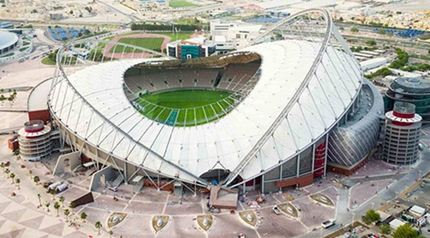

Estádios
Quando se fala de Copa do Mundo não tem como não citar os estádios que vão sedia-lá, talvez um dos aspectos mais bonitos, visualmente falando. Ao todo vão ser 8 estádios, sendo 7 construídos recentemente e 1 que foi bastante aprimorado, todos contam com tecnologia de ponta. Dentre eles:
Lusail Stadium

Localizado na cidade de Lusail, o estádio com capacidade de 80.000 pessoas começou a ser construído em 11 de abril de 2017 e foi inaugurado em 22 de novembro de 2021, ele irá sediar a final da Copa.
Al Bayt Stadium

O estádio que chama atenção pelo seu visual nada tradicional mas que é muito exuberante tem capacidade de 60.000 pessoas, ele está localizado na cidade de Al Khor, ele foi inaugurado em 30 de novembro de 2021, o estádio foi construído em homenagem às habitações beduínas tradicionais do Qatar. O estádio será palco do jogo de abertura da Copa.
Khalifa International
Estádio que passou por ampla reforma e reabriu em 2017, tem capacidade para 40.000 pessoas e está localizado na capital do país, Doha. O estádio Khalifa International é símbolo de tecnologia e infraestrutura, seja pela modernidade interna, seja pela arquitetura.
Stadium 974

Um exemplo de sustentabilidade, o estádio foi inteiramente construído sobre containers não mais usados que após a Copa do Mundo devem ser desmontados e usados em arenas menores. O Stadium 974 tem capacidade de 40.000 pessoas.
Al Thumama

O estádio com capacidade de 40.000 pessoas foi inspirado na gahfiya, o tradicional lenço branco que os homens árabes usam na cabeça. O Al Thumama fica no sul da cidade de Doha e começou a ser construído em 2017.
Education City Stadium

O estádio está localizado no campus da principal universidade do Qatar na cidade de Al Rayyan, ele foi inaugurado em junho de 2020 e tem capacidade de 45.000 espectadores.
Ahmad Bin Ali ou Al-Rayyan Stadium

Localizado na cidade de Al-Rayyan, o estádio além dos jogos pode entreter seus visitantes com as paisagens do deserto. Ele tem capacidade de 40.000 pessoas e sua estrutura modular superior será doada para países pobres sem estrutura esportiva após o término da Copa.
Al Janoub

Localizado na cidade de Al Wakrah, o estádio foi inspirado na tradicional colheita de pérolas, a primeira grande atividade comercial do Qatar. O Al Janoub Stadium que tem capacidade de 40.000 torcedores possui uma da arquiteturas mais bonitas da atualidade que chama bastante atenção, ele foi inaugurado em 16 de maio de 2019.
Polêmicas
Podemos ver que os estádios da Copa são magníficos, possuem uma estrutura incrível e usam tecnologia de ponta mas devemos levar em conta como os estádios foram construídos e reformados, foram utilizadas praticamente mão-de-obra escrava. O que nos faz pensar: O que fez a Fifa escolher o Qatar para sediar a Copa? Confira mais